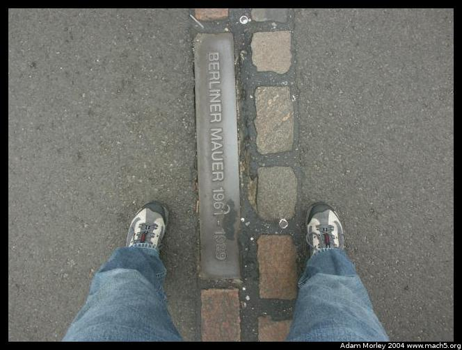
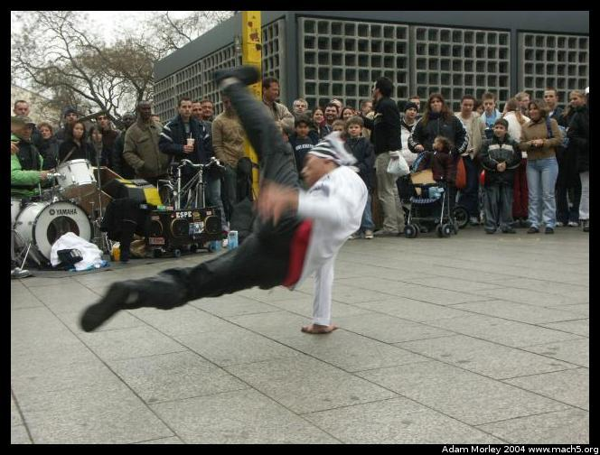
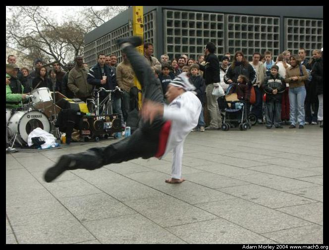

I traveled to Berlin with the DIS trip to Berlin, a very organized and educational trip.

We traveled to Berlin via ferry and bus, meaning we got to ride the neat ferry boat that has train tracks on it. More about that ferry boat on my Denmark pages.
We went and dined at the top of the TV Tower in Alexanderplatz.
But on the way, there were students protesting tuition increases.
At the base of the tower, there are some odd architectural features
And the tower, from below
One of cool things about the Telecafe is that it rotates --- just like the Space Needle in Seattle.
The view is pretty impressive. My tablemate was a fellow DIS student from Moscow.
Definitely cooler at night.
What trip to Berlin would be complete without a trip to the dome on the Reichstag?
You can even see down into the parliamentary chambers.
Though it's much easier at ground level.
The Brandenburg Gate, formerly inaccessible during the Cold War
The site of the Berlin wall, about 100 meters in front of the gate.
Let's go to Europe and do a little sightseeing. The funny thing is the Starbucks drinker is a German.
One of the largest remaining pieces of the Berlin Wall.
Apples in the entry of a church?
Memorial church in central Berlin.
 
I stumbled upon great food and a break-dancing show near the church.
What's wrong with this picture?
Niels, one of the Danish instructors who came along for the trip
Surplus Soviet-era souvenirs near Checkpoint Charlie
Random public art near Checkpoint Charlie
The former East Germany, complete with SmartCar.
Who loves SmartCars?
An escalator in a supermarket, but one that is a ramp. It has no stairs. It's quite functional for carts, but hold on!
I went up in a balloon to see the city from above.
Potsdamer Platz and the Sony Center.
Potsdamer Platz was famously split by the Berlin wall. A photo from before the Cold war shows the major intersection. During the war, another photo shows how much the intersection changed. Today, a small piece of the Berlin wall remains, and traffic has returned. The underground tunnels have been re-connected, and the trains run through both parts of the city. Wikipedia has an entry on Potsdamer Platz.
The path of the Berlin Wall near Potsdamer Platz
The path of the wall, and the remaining piece near Potsdamer Platz.
Tail-in parallel parking for smart cars.
Potsdamer Platz at night.
The Sony Center at night.
A nearby building at night.
On our way back to Copenhagen, we visited Sachsenhausen, a Nazi Concentration Camp 40km north of Berlin. Tens of thousands of people died here during its operation before World War II, during, and later when the camp was used as a gulag during communist times. More information on Sachsenhausen is available from Wikipedia.
Adam can be reached at adam dot morley at gmail dot com
{kind=link}